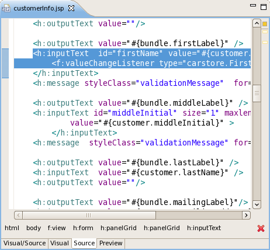
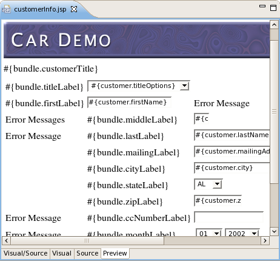

Last revised November 12, 2007
Plugins |
|
XUL Runner |
This release uses XULRunner as a render part of visual editor instead of custom compiled mozilla. |
Source navigation |
|
Selection bar now available on Source tab too. It shows a path from the current tag to its first parent.  |
|
What You See Is What You Get |
|
Now there is the preview tab that shows a page very similar to its look in runtime.  |
|
This release supports RichFaces 3.1.0. |
|